Continuous Development in Minsk core team
Speaker: Egor Stambakio
Use case
- ~200 Github repositories
- modules and standalone applications written in different languages, using different build tools
- requirement to support multiple versions per module - one or more stable and many bugfix branches
Goal
Organize efficient development process where development cycle takes less time and provides highest quality at the same time.
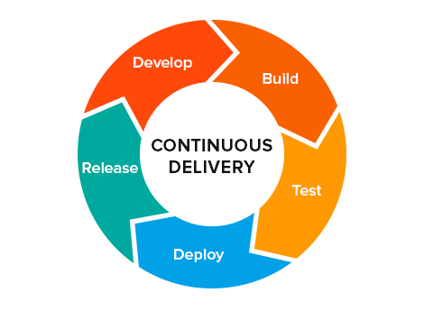Highest quality can be achieved due to quality testing in conditions as close to production environment as possible.
Therefore remotely installed application is preferable.
Key decision:
branch per task
- development branch is created for each task
- tasks are developed in isolation
- less cases to test
- less collisions and merge conflicts
- ability to define clear workflow
Branch per task workflow

Without continuous development
- create development branch out of stable branch
- write code
- commit to development branch
- build artifacts for QA locally (takes time)
- give QA links to artifacts
- QA tries to deploy app locally (takes time, can fail)
- QA test fails -> start over
With continuous development
- create development branch out of stable branch
- write code
- commit to development branch
- assign ticket to QA
- start next task
Build and deployment are handled by background job.
Benefits of Continuous Development
- reduced overhead of repetitive build/deployment operations
- reproducible builds in predictable environment reduce uncertainty when build fails
- more frequent cycles allow more rapid software development
- developer and QA are focused on their job, rather than fighting deployment issues
- less room for mistakes
- clear separation of responsibility
Our solution
Development phases
- coding
-
building
- running automated tests on codebase
- building artifacts (WAR files, docker images)
-
deployment and testing
- deploying live demo website accessible by URL
- QA testing
- release after successful testing,
otherwise start over
Coding phase
Tool: Github
Task is an open issue on Github
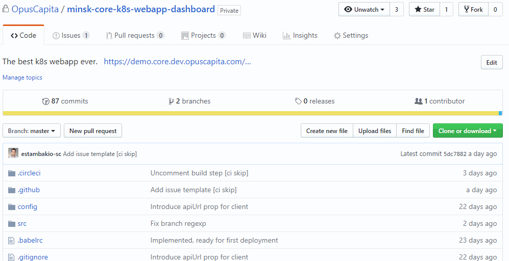Create branch for this issue
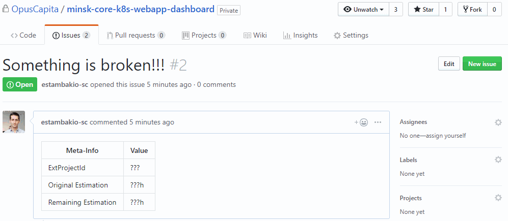Commit code to the branch and push branch to Github
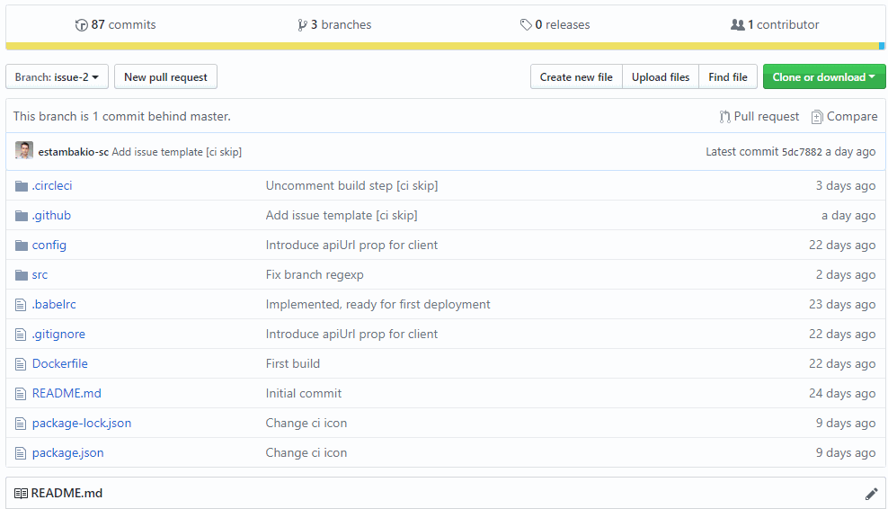Triggers the next stage: build
In every repository there is a directory .circleci with a config.yml file for CircleCI. Without it next phase won't be triggered.
If module can't be deployed (e.g. grails plugin), it is deployed as a part of bigger application.
In this case additional steps are required:
- create a branch in application repository
- plug in module's development branch as a dependency
- push branch in application: triggers 'build' phase
Building phase
Tool: CircleCI
Automates pipeline from commit to deploy

- run unit tests
- run integration tests
- build and publish artifacts
- build and publish docker images
CircleCI build workflow
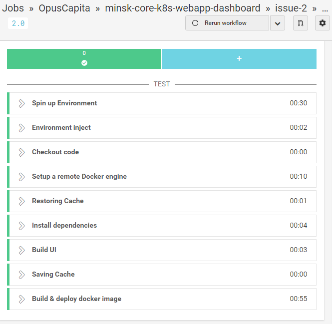Triggers the next stage: deploy to Kubernetes cluster
Notes:
- build is configured in .circleci/config.yml file in current branch
- deployment job to CircleCI is unified in form of reusable config "Orb" located here https://github.com/OpusCapita/circleci-orbs/tree/master/src/kubernetes
- adding deployment job is as simple as adding 2 lines of text
Deployment and testing
Tools:
CircleCI
Azure AKS
Kubernetes cluster is provisioned for development purposes using Azure AKS service.
CircleCI deployment workflow
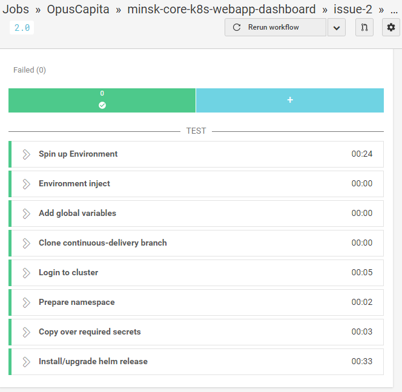Every branch is deployed into a separate namespace (e.g. virtual sub-cluster).
- this separates deployment related to one task in a single module from all other deployments in cluster
- provides a scope for names, e.g. eliminates possibility of naming collisons between Kubernetes resourses
- allows to limit resources consumption per deployment
When deployment is triggered by previous step, notification is sent into Slack channel providing useful details, e.g. links to deployment, source code, etc.
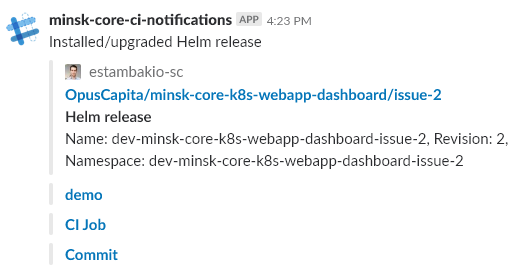When deployment is up an running it is accessible in browser via URL, e.g. https://demo.core.dev.opuscapita.com/repo/branch/
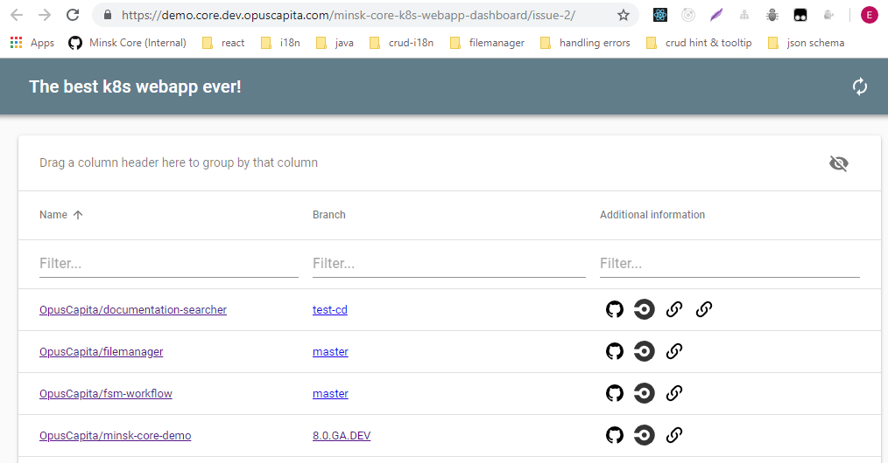Now we know that code is working. Create a pull request for code review
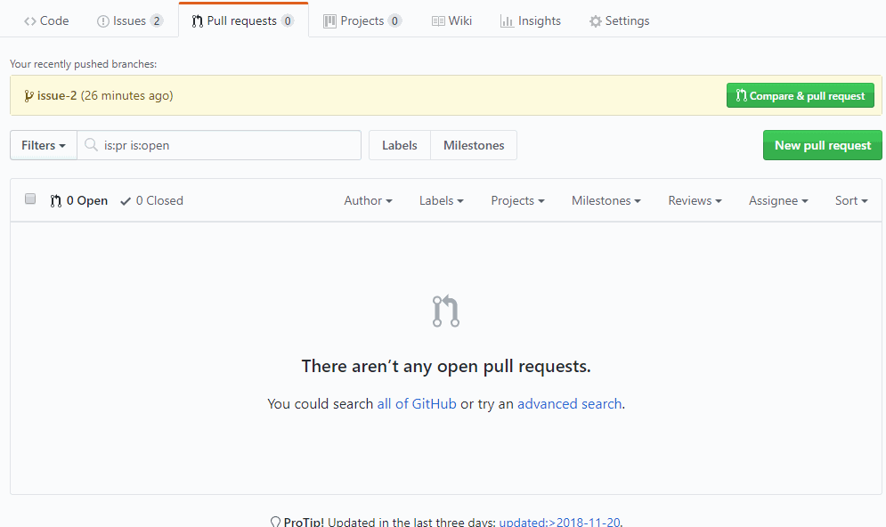- QA can perform manual and/or automated testing on a live running application
- If QA fails ticket is returned to developer and the whole process starts over
- If QA is successful then QA triggers release phase
Say 'Hi' to QA:
Notes:
- deployments for private repositories are secured by Azure ActiveDirectory and allow access only for OpusCapita members
- configuration for deployments is placed in continuous-delivery branch in a repository been built
Release phase
Tools:
Github
CircleCI
Minsk Core Multitool
https://demo.core.dev.opuscapita.com/minsk-core-multitool/masterMerge pull request from development branch into the main (usually master) branch.
Recommended merge mode is squash & merge, which creates a single merge commit out of all branch commits.
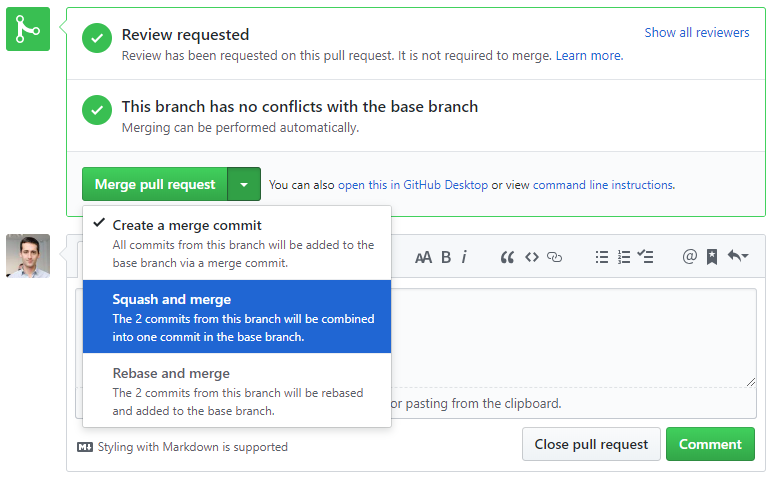Here developer should provide message according to particular template and confirm merge.
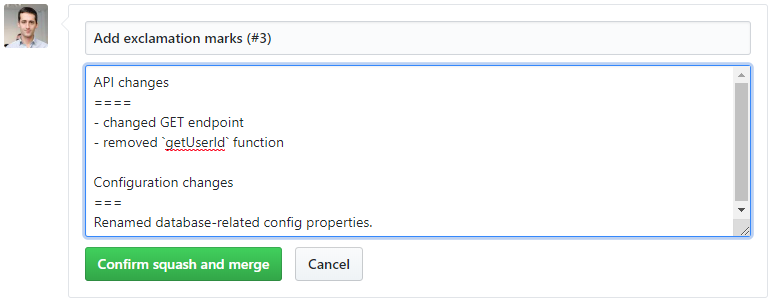Properly formatted message will be automatically parsed during following steps and used as a part of release notes.
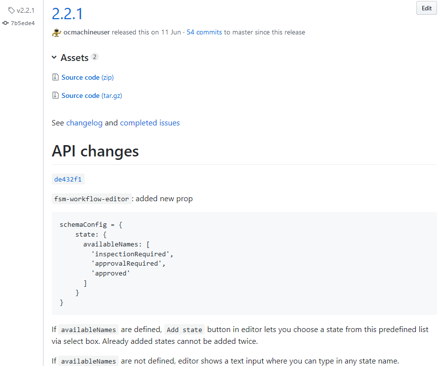Delete development branch after merge
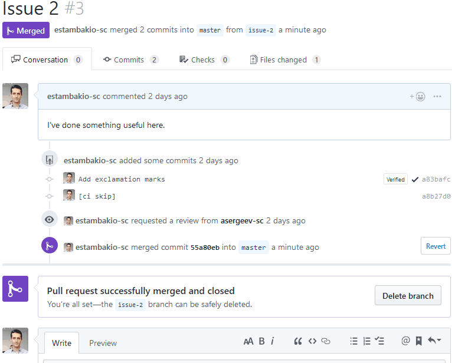Every deployment in cluster has a background job, which tracks branch status and when branch is deleted it deletes deployment from cluster with all related resources.
Hense only relevant installations consume resources; obsolete installations are destroyed automatically.
When deployment is deleted, notification is sent into Slack channel:
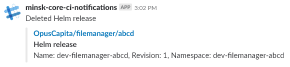Merge into main branch triggers automated CircleCI build on main branch.
If build on main branch is successful go to Minsk Core Multitool
- select repository and main branch
- fill in release and SNAPSHOT versions
- select ticket(s) which developer implemented or fixed in this cycle
- submit request
CircleCI starts automated build according to rules defined in release branch in the repository
- Github release is created, assigned a milestone, latest commit is tagged with release version
- selected issues are labeled as closed automatically
- artifacts are built and published with the same version to corresponding repositories (maven artifactory, npmjs, etc.)
Conclusion
No more inventing a wheel for every ticket: clear workflow covers all needs in 9/10 cases (and growing as development flow is adjusted to the needs of team).
Nobody needs to wait for someone else. This results in time saving while providing better quality:
- more frequent development
- less features to test
- more focus
This approach provides clear separation of concerns and responsibility: developer is coding, QA is testing, robots assemble all parts. If something breaks along the line, it's easier to debug.
While setup looks unified, developer can easily fine-grain or change it entirely, because configurations for all steps belong to a repository. Configuration for build process can differ per branch, configuration for deployment and release processes can differ per repository.
What's next?
I encourage developers to follow these guidelines:
- properly use branches,
- don't forget to write release notes in merge commit,
- use release tool instead of releasing manually.
I encourage teams to consider this workflow for their development process, because it's completely hands-on and Minsk core team benefits from it on a daily basis.
Any questions?
We are here to help:
opuscapita.slack#minsk-core-team
Thank you.
Speaker: Egor Stambakio
P. S. How you can find these slides
estambakio-sc.github.io/continuous-development/